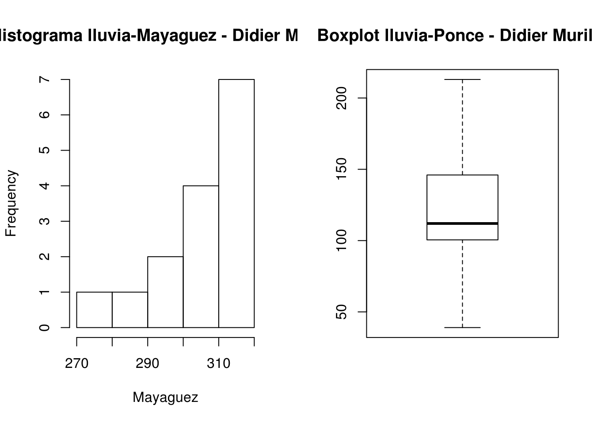
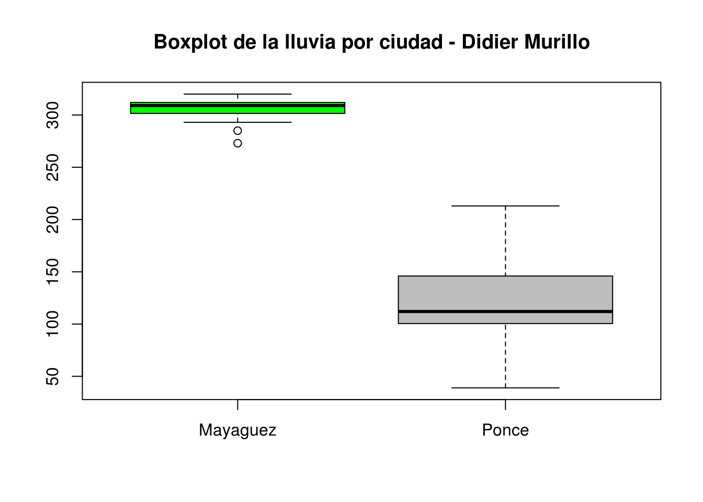

Solución Tarea 4
1. Los siguientes datos corresponden a las cifras mensuales en % del desempleo en Puerto Rico para el año 2014
15.2 13.1 14.7 14.2 13.8 13.1 13.5 14.2 14 14.2 13.7 13.1
Use los datos anteriores para contestar manualmente: (Debe detallar su procedimiento.)
a) ¿Cuál fue la tasa de desempleo promedio en Puerto Rico para el año 2014?
\[\displaystyle \bar{X}= \dfrac{\sum_{i=1}^{12}x_i}{12}= \dfrac{15.2 + 13.1 + 14.7 + 14.2 + 13.8 + 13.1 + 13.5 + 14.2 + 14 + 14.2 + 13.7 + 13.1}{12}\]
\[\displaystyle \bar{X} = \dfrac{166.8}{12}=13.9\]
b) Encuentre la mediana del la tasa de desempleo en Puerto Rico para el año 2014. ¿Qué significado tiene la mediana en este caso?
Los datos ordenados son los siguientes:
13.1 13.1 13.1 13.5 13.7 13.8 14.0 14.2 14.2 14.2 14.7 15.2
\[Median = \dfrac{13.7 + 13.8}{2}=13.9\]
Es decir que el 50% de los datos es 13.9 %
c) Encuentre la moda de la tasa de desempleo en Puerto Rico para el año 2014. Interprete la moda.
El conjunto de datos tiene dos modas:
13.1 y 14.2.
Por lo tanto la distribución de los datos es bimodal.
2. Volvamos a los datos de la lluvia en Mayagüez, los cuales son:
311 293 285 306 311 309 313 309 320 311 319 307 320 273 297
Ahora también tenemos información sobre los días de lluvia durante los últimos 15 años en Ponce.
126 141 96 159 171 213 73 101 112 100 151 39 140 108 103
Use los datos de la lluvia de Mayagüez y Ponce para responder las siguientes preguntas:
a) En promedio, ¿cuál es la ciudad más lluviosa?. Justifique.
Promedio de lluvia en Mayagüez:
\[\displaystyle \bar{X}= \dfrac{\sum_{i=1}^{15}x_i}{15}=305.6\]
Promedio de lluvia en Ponce:
\[\displaystyle \bar{X}= \dfrac{\sum_{i=1}^{15}x_i}{15}=122.2\]
Según la media, la ciudad más lluviosa es Mayaguez.
b) Use los valores de la media, la mediana y un gráfico adecuado para decir si las distribuciones de la lluvia son simétricas o sesgadas a derecha o izquierda.
La mediana para los días de lluvia en Mayagüez es:
\[Mediana = 309\]
Tenemos que para Mayagüez la Media es menor que la mediana (\(\bar{X} < Mediana\)), es decir \(305.6 < 309\). Por lo tanto la distribución de la lluvia en Mayagüez es sesgada a la izquierda.
La mediana para los días de lluvia en Ponce es:
\[Mediana = 112\]
Tenemos que para Ponce la media es mayor que la mediana (\(\bar{X} > Mediana\)), es decir \(122.2 > 112\). Por lo tanto la distribución de la lluvia en Ponce es sesgada a la derecha.
Mayaguez <- c(311, 293, 285, 306, 311, 309, 313, 309, 320, 311, 319, 307, 320, 273, 297)
Ponce <- c(126, 141, 96, 159, 171, 213, 73, 101, 112, 100, 151, 39, 140, 108, 103)
par(mfrow = c(1,2))
hist(Mayaguez,main = "Histograma lluvia-Mayaguez - Didier Murillo")
boxplot(Ponce, main = "Boxplot lluvia-Ponce - Didier Murillo")
El histograma nos indica el sesgo a izquierda de la distribución de la lluvia en Mayagüez, de igual manera el boxplot nos muestra el sesgo a la derecha de la distribución de la lluvia en Ponce.
c) Use la idea del coeficiente de variación para decidir cuál de las dos ciudades presenta mayor variabilidad en la lluvia. Debería usar R para encontrar la desviación estándar de los datos.
Usamos R para calcular las desviaciones estándar
sd(Mayaguez)## [1] 13.3138CV para Mayaguez
\[CV = \dfrac{13.3138}{305.6}*100 = 0.0435*100=4.35 \%\]
sd(Ponce)## [1] 42.37621CV para Ponce
\[CV = \dfrac{42.3762}{122.2}*100 = 0.3776*100=34.67\%\]
La ciudad con mayor variabilidad en la lluvia es Ponce. La variabilidad en Mayagüez es muy poca.
d) Encontrar manualmente los cuartiles \(Q_1, Q_2\) y \(Q_3\) en el conjunto de datos para la lluvia de Ponce. También encuentre e interprete el percentil 64. Luego use R para verificar sus resultados.
Los datos ordenados para Ponce son:
39 73 96 100 101 103 108 112 126 140 141 151 159 171 213
La primera mitad es:
39 73 96 100 101 103 108 112.
Por lo tanto
\[Q_1 = \dfrac{100 + 101}{2} = 100.5 \]
El segundo cuartil coincide con la mediana:
39 73 96 100 101 103 108 112 126 140 141 151 159 171 213
\[Q_2 = Mediana = 112 \]
La segunda mitad es:
112 126 140 141 151 159 171 213
\[Q_3 = \dfrac{141 + 151}{2} = 146\]
El percentil 64 es
\[\dfrac{15*64}{100}=9.6 \simeq 10\]
Así, tenemos que el valor que ocupa la posición número 10 es 140. Por lo tanto, el 64% de los datos se encuentra en la observación 140.
e) Puede usar la función summary de R con los datos de la lluvia en las dos ciudades. Luego use los resultados de summary para calcular el rango intercuartílico en los datos de la lluvia para cada ciudad. Nuevamente, ¿cuál es la ciudad con mayor variabilidad en la lluvia, según el RIC?
summary(Mayaguez)## Min. 1st Qu. Median Mean 3rd Qu. Max.
## 273.0 301.5 309.0 305.6 312.0 320.0Luego el RIC es:
\[RIC = Q_3 - Q_1 = 312 - 301.5 = 11.5\]
summary(Ponce)## Min. 1st Qu. Median Mean 3rd Qu. Max.
## 39.0 100.5 112.0 122.2 146.0 213.0Luego el RIC es:
\[RIC = Q_3 - Q_1 = 146.0 - 100.5 = 45.5\]
Por lo tanto y dejándonos llevar por el valor del RIC, nuevamente la ciudad con mayor variabilidad en la lluvia es Ponce.
f) Use R y/o RStudio para hacer una gráfica de caja y bigotes (Boxplot) con los datos de la lluvia en las dos ciudades. Interpretar el gráfico.
lluvia <- c(Mayaguez,Ponce)
pueblo <- c(rep("Mayaguez",15),rep("Ponce",15))
boxplot(lluvia ~ pueblo,col = c("green", "grey"), main = "Boxplot de la lluvia por ciudad - Didier Murillo")
Según el gráfico se observa mayor cantidad de días lluviosos en Mayagüez, pero mucha variabilidad en Ponce.